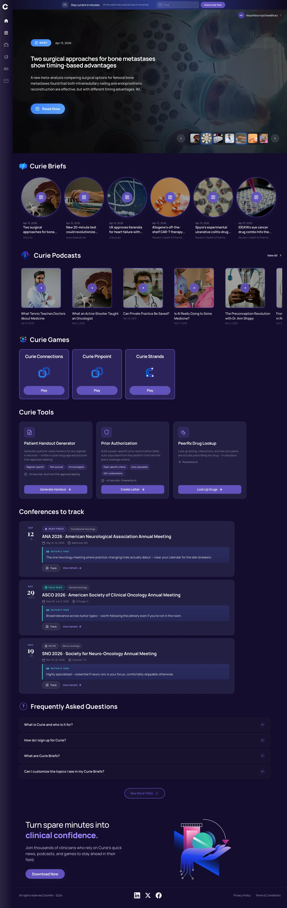
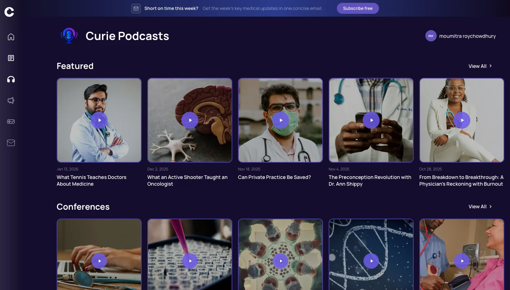
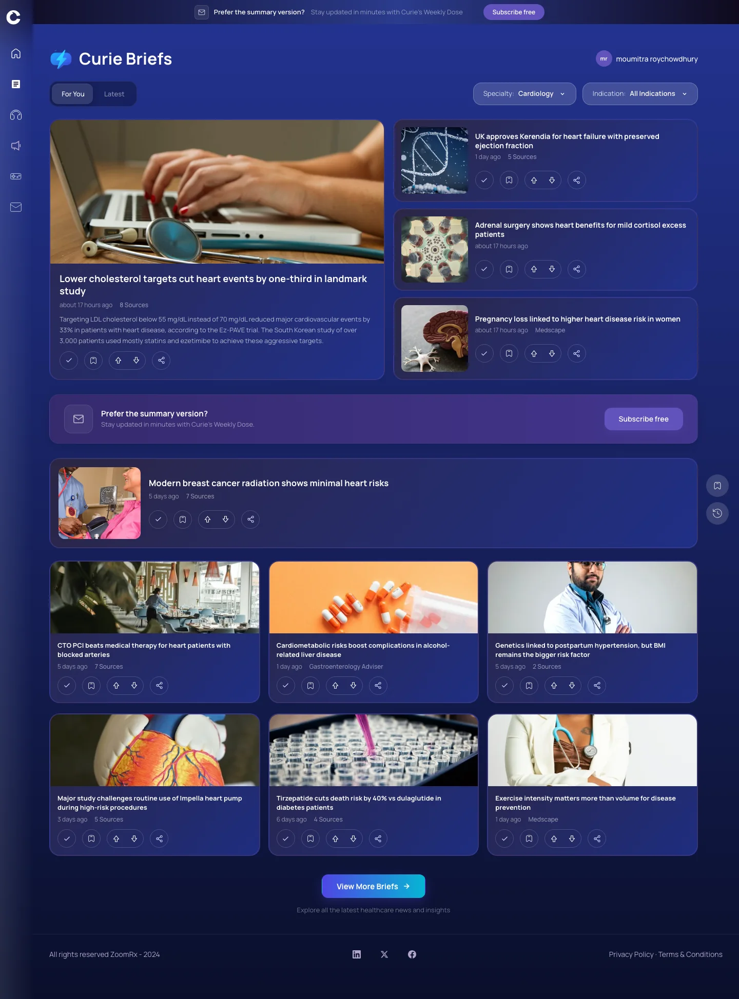
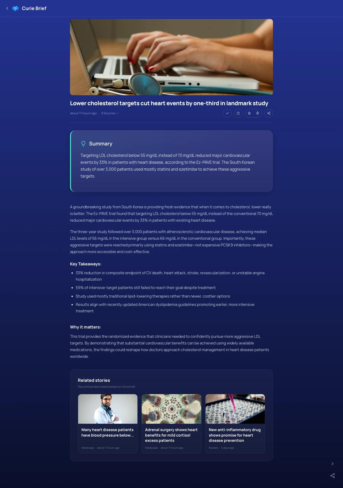
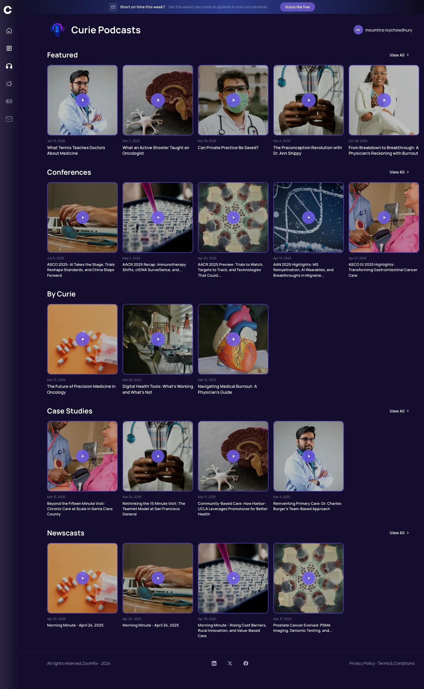
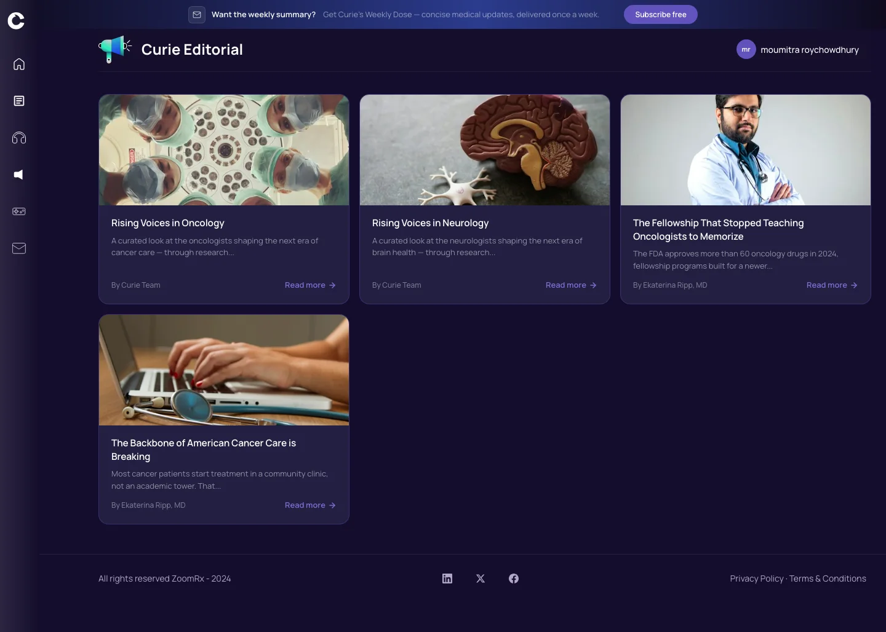
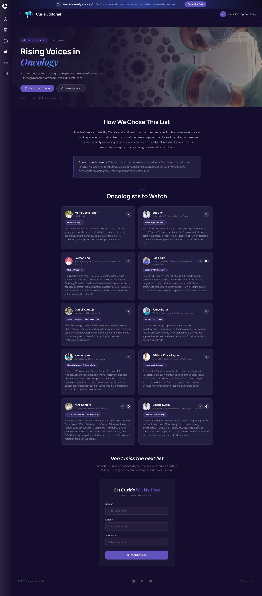
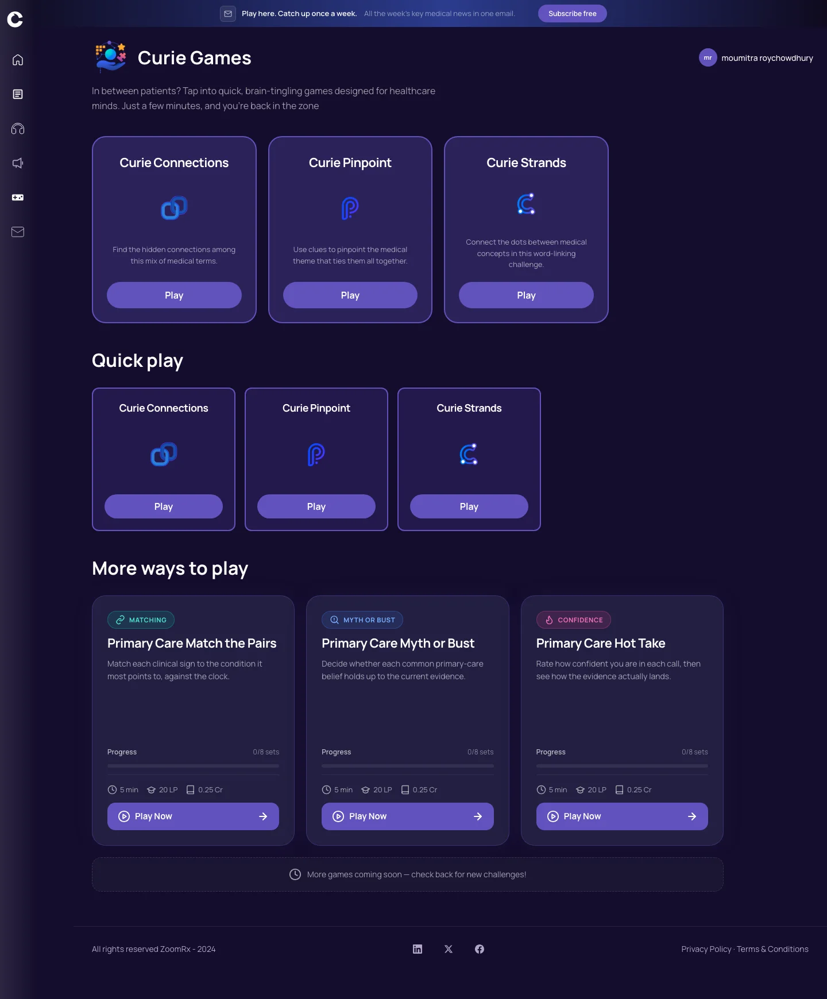
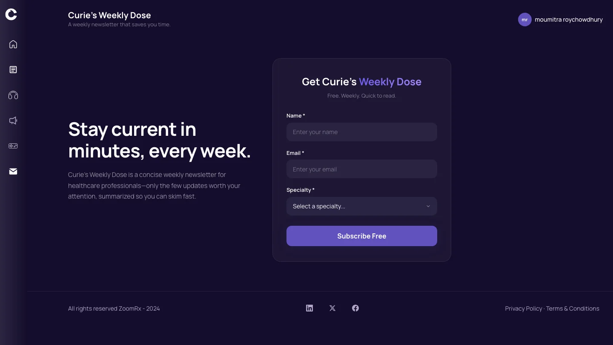

How Curie began as an idea
By 2024, ZoomRx had more than 50,000 healthcare professionals in its market research panel, but only about 20% took part at any given time. FY24 was the first year since FY16 that bookings grew faster than the panel. A $20M oncology business depended on roughly 500 active oncologists, and 65–70% of oncologists interacted with ZoomRx ten times a month or less.
The planning documents named the root cause plainly: ZoomRx “provides little to no value to its Community beyond monetary compensation.” Doctors heard from ZoomRx only when a paid survey arrived, sometimes about ten emails a week, so there was no reason to engage between surveys.
“ZoomRx's Community represents a very large source of untapped revenue, with potential future value on the order of 100s of millions or more.”
Community Engagement Beyond MR, L0 Brief FY25Leadership looked at companies that had built businesses on physician audiences, including Doximity (about $420M revenue in 2023), WebMD and Medscape (acquired for $2.8B) and Lasso (acquired by IQVIA for $450M). They shared four value drivers: precise targeting, accurate measurement, unique channels, and frequent engagement. ZoomRx had the first three. The missing one was a reason for doctors to come back often.
The idea first sat inside the Community team as a content strategy for oncologists, aiming to grow monthly active oncologists from 350 to 3,000. It was then spun out as “Community Engagement Beyond MR” under Andrew Yukawa and treated as “a new startup business incubated by ZoomRx,” modelled on Y Combinator. Its north star was “Build a better Doximity.”
What Curie is and how it works
Curie is a free medical media platform for healthcare professionals, at curie.md, on mobile and inside the ZoomRx Community app. It turns the daily flood of medical news into a few things a busy clinician can take in between patients.
- BriefsShort, AI-assisted summaries of the latest medical news, filtered to each doctor's specialty.
- PodcastsNewscasts, conference recaps and case studies for the moments when reading isn't possible.
- Editorial & GamesOriginal features that only Curie owns, and quick medical word games that give doctors a reason to come back daily.
- Weekly DoseA weekly newsletter with only the few updates worth a clinician's attention.
Doctors read, listen and play for free. Each bookmark, like and specialty choice tells Curie what they care about, so content gets more relevant over time. Behind that, a small team uses generative AI to publish at a pace an editorial-staffed competitor can't match, and the engaged, verified audience it builds is what ZoomRx can later offer to advertisers.
Why ZoomRx needed to build Curie
| Need | How Curie answers it |
|---|---|
| Panel health | Bookings were outgrowing the panel. A reason to visit ZoomRx beyond surveys builds familiarity and loyalty, and Curie is now built into the Community app. |
| The missing value driver | ZoomRx already had targeting, measurement and channels. Curie supplies frequent, habit-forming engagement, which ZoomRx had never offered. |
| A new revenue line | Pharma spends about $50B a year on HCP marketing. An engaged, verified audience can be sold to advertisers, with a target of $5M a year by FY30. |
| A fresh brand | Many HCPs already had opinions of ZoomRx, which the brief described as “not always positive.” A separate brand focused only on giving value starts clean. |
| Compliance | Market research and marketing must be kept apart. A separate brand, finances and team make that firewall real. |
| AI advantage | Generative AI lets a small team produce briefs, podcasts and games at a pace competitors built on editorial staff can't match. |
Curie (curie.md): Briefs, Podcasts, Editorial, Games and the “Curie's Weekly Dose” newsletter for healthcare professionals
Product designer: Curie web platform pages, Curie Design System v1.0, homepage redesign concepts
Curie (Andrew Yukawa, lead), with Tech, Community and Content
Idea Sep–Oct 2024 · MVP Nov 2024 · Curie 2.0 website spring 2025 · FY26 monetization
Monthly active users grew from 242 (Dec 2024) to 16.3K (Aug 2025); newsletter reached 17K verified HCPs with a 33% open rate
Shaping it into an MVP
The first brief asked for a proof of concept shipped to real HCPs, with engagement measured, by January 1. The team chose a narrow, testable idea: a personalized medical podcast app for oncologists, built in two weeks.
| MVP element | What was built |
|---|---|
| Core product | Mobile app delivering personalized medical news podcasts, with topics, therapeutic areas and frequency chosen by the user |
| Onboarding | Invite email from Community → download → intro podcast → invite code → pick interests → hear a first “personalized” episode immediately |
| Personalization shortcut | 255 possible topic combinations mapped to 8 pre-made podcasts; early episodes curated from Medscape and generated with NotebookLM |
| Measurement from day one | Reach, retention (share of each episode heard), completion rate, unique weekly listeners |
| Rollout | Alpha with ZoomRx employees (Nov 11–15, 2024) · Beta with selected oncologists (Nov 18–29) · General availability Dec 2, 2024 |
The onboarding was designed around three problems: asking people to sign up before they had experienced anything, making the “magic” of a custom podcast visible, and avoiding a UX that felt like “another podcast app.” Scope was cut into three sprints to hit the Nov 8 launch, and automated personalization was postponed because it could be done by hand at first.
The name: why “Curie”
On Oct 1, 2024 the team brainstormed names: Velix, Veridex, Curix (“cure”), Curio (“curiosity and discovery”) and Curate (“the act of curation”). By Oct 24, the product had become Curie, on the domain curie.md.
“Curie = curation + Marie Curie: a trusted curator of medical knowledge, carrying the spirit of discovery.”
The naming idea behind the brandThe name holds both halves of the product's promise. Curation is what Curie does every day: sorting a flood of medical news into the few stories that matter to each clinician. Marie Curie stands for discovery and scientific rigor, and she is a figure every physician recognizes and respects. The name keeps the “curate” and “curio” threads from the brainstorm and adds a human, credible face. The .md domain reads as “M.D.,” signalling to doctors that the site is made for them.
From podcast app to media platform
| When | What changed | Why |
|---|---|---|
| Nov–Dec 2024 | Podcast MVP ships; a browser version is requested | Tech bandwidth was the bottleneck; web lowers the barrier compared with an app download |
| Jan 2025 | Weekly show cadence: “Your Curated Dose” (Mon), “Under the Microscope” (Wed), “Ask Curie” (Fri) | Week-one retention was the core problem; “consistency builds habits” |
| Mar 2025 | Games launch: Strands, Connections, Myth or Medicine | Short, repeatable reasons to return daily, despite internal debate about fit with the brand |
| May 2025 | Curie 2.0 website with Briefs; newsletter | 1,000 users in 10 days; “Users can experience content easily with the new UI” |
| Jun 2025 | “No new pillars; relentless optimization” | Only 61 of 1,000 users were returning; focus shifts to retention and habit |
| Aug 2025 | FY26 strategy: find the “fastest path to first dollar” | “Curie brand and content pillars firmly established” |
| Sep 2025 | Homepage redesign concepts: Curie Daily, intent-driven entry, Focus and Explore modes | Move the homepage “from content discovery to delivering clarity and deep insight” |
The Curie brand and the reasoning behind it
Curie positions itself as “a digital media company made for Healthcare Professionals.” Its promise is signal over noise for clinicians with little time, summed up in the tagline “The smartest 3-minute read in medicine.” The voice is set as “calm confidence with clinical precision.”
| Brand rule | What it means | Reasoning |
|---|---|---|
| Dark canvas, always | Every page sits on a deep purple-black background; panels float dark-on-dark | Sets Curie apart from the white, clinical look of EHRs and journals. Easier on the eyes on night shifts and between patients, and reads as premium media. |
| Purple is the brand | Purple leads; teal, cyan, blue, green and pink are rare accents | Purple is uncommon in healthcare, which is dominated by blues and greens, so Curie is recognizable at a glance. The few accents mark content types without competing. |
| Two fonts | Manrope for everything; Playfair Display only for a hero headline, pull quote or single number | Manrope stays readable at small sizes on phones. A touch of Playfair adds editorial authority, like a trusted journal masthead. |
| A text-opacity ladder | Hierarchy comes from stepping down text brightness, not new colors | Keeps pages calm. Readers see what matters first without the page getting louder. |
| Restraint | One strong accent per view | Doctors are overloaded; a quiet page that makes one clear point builds trust. |
| Frosted-glass cards | Translucent panels, soft blur, faint purple edge, low shadow | Gives depth on a dark canvas and a modern, media-app feel while every card stays consistent. |
| Hover on everything clickable | Every card, tag and button responds | Makes it obvious what is interactive on dense content pages. |
| Reuse over invention | New pages are built from the existing component catalog | Keeps the brand consistent as a small team ships quickly. This became the Curie Design System v1.0. |
UX case study: every page and feature, and why it is designed that way
Curie is used in the gaps of a clinician's day: between patients, on a commute, at the end of a shift. That one fact drives almost every decision below. Each page is designed to deliver value in seconds, to show why the content can be trusted, and to give the reader a reason to come back.
How the product is organized
Every page belongs to one of four types, and each type has one job. This keeps pages predictable: once a doctor has used one list page, they already know how every other list page works.
| Page type | The user's question | Curie pages |
|---|---|---|
| Home | “What's new, and where should I go?” | Home |
| List | “Show me everything of this kind so I can pick one.” | Briefs, Podcasts, Editorial, Games |
| Detail | “Let me read, listen to or play this one thing fully.” | Brief detail, Editorial detail, Podcast player |
| Form | “Let me give you something, quickly.” | Newsletter signup |
Patterns used across the whole product
| Pattern | Where it appears | Why |
|---|---|---|
| Freshness signals | Relative times on Briefs (“about 17 hours ago,” “5 days ago”); dates on Podcasts, Editorial and Home | Doctors want to know how new information is before they trust it. Relative time is faster to read than a date. |
| Evidence signals | Source counts (“8 Sources”) or the source name (“Medscape,” “Reuters”) on every brief | Clinicians are trained to check evidence. Showing sources up front builds trust and sets Curie apart from a single-outlet feed. |
| A personalization loop | Bookmark, like and dislike on every brief; “For You” feed; specialty filters; specialty in the newsletter signup | Each small signal teaches Curie what a doctor cares about, which answers the early finding that content was “not always relevant.” |
| A subscription ladder | Newsletter bar on every page, inline prompts, the signup page, “Subscribe to Curie” on editorial | Moves casual visitors toward subscribing, the audience that can later be monetized. |
| One clear action per item | Read Now, Listen Now, Play Now, Dive in, Play, Read more | A specific verb tells people exactly what happens when they click, which removes hesitation. |
| Helpful empty states | “No saved Briefs yet. Tap the bookmark icon on any Brief to save it for later.” | A blank screen feels broken. An empty state that teaches the feature turns it into onboarding. |
Home

Purpose: Turns five content types into one daily starting point and shows the range of Curie in the first few seconds.
When it's used: The first visit, and daily returns when the reader has no specific goal.
Page walkthrough (top to bottom)- Newsletter banner: “Stay current in minutes. All the week's key medical news in one email,” with an email field and “Subscribe free.”
- Hero carousel with three slides: a PODCAST (“What an Active Shooter Taught an Oncologist,” Listen Now), a BRIEF (“Two surgical approaches for bone metastases…,” Read Now) and a GAME (“Daily Connections Puzzle,” Play Now), with thumbnail navigation.
- Curie Briefs section: six compact items, each with date, shortened title and source or “2 Sources.”
- Curie Podcasts row: recent episodes with dates and “View All.”
- Curie Games row: Curie Connections, Curie Pinpoint and Curie Strands, each with Play.
- Frequently asked questions: “What is Curie and who is it for?”, “How do I sign up for Curie?”, “What are Curie Briefs?”, “Can I customize the topics I see in my Curie Briefs?”, and “See More FAQs.”
- Closing call to action: “Turn spare minutes into clinical confidence. Join thousands of clinicians who rely on Curie's quick news, podcasts, and games to stay ahead in their field,” with “Download Now” and an illustration.
| Feature | What it does | Why it's designed this way |
|---|---|---|
| Hero carousel of three content types | Features one podcast, one brief and one game, each with a type label, date, title and short excerpt | Shows at once that Curie is more than news. Each pillar gets front-page space without one crowding out the others. |
| Verbs matched to the content | Listen Now, Read Now, Play Now | The button tells the user what kind of experience comes next, so there are no surprises. |
| Type labels (PODCAST, BRIEF, GAME) | Small uppercase tag above each hero title | Helps people tell formats apart at a glance in a mixed carousel. |
| Compact brief list | Shortened titles with date and source | Invites scanning. The reader sees what's new without committing to a full story. |
| Horizontal podcast and game rows | Swipeable rows with “View All” | A familiar streaming-app pattern that shows many items in little vertical space. |
| FAQ | Answers four common questions in expandable form | New visitors arrive from ads and newsletters without context. The FAQ explains what Curie is, who it's for and how to personalize it, without a separate help page. |
| Closing call to action | Restates the promise and offers the app | Catches readers who scrolled to the end, the most engaged visitors, with a clear next step. |
States and edge cases: Newsletter and carousel content change daily; the carousel can be navigated by thumbnail.
What this page should move: Click-through from Home to any pillar, newsletter signups, and return visits. The Sep 2025 redesign concepts push further toward a two-minute personal “Curie Daily” briefing.
The shared frame: navigation, newsletter bar, account and footer

Purpose: Holds five very different content types together so Curie feels like one product, not five apps.
When it's used: On every visit, on every page.
Page walkthrough (top to bottom)- Side navigation with the Curie logo, then Home, Briefs, Podcasts, Editorial, Games and Newsletter, each with an icon.
- Personal shortcuts under the navigation: Saved and History.
- A newsletter bar across the top of the page, with an email field or a “Subscribe free” button.
- The page header: the section's icon and title on the left, the user's initials and name on the right.
- A user menu with “Profile & Preferences” and “Logout.”
- A footer with “All rights reserved ZoomRx” and a Privacy Policy link.
| Feature | What it does | Why it's designed this way |
|---|---|---|
| Side navigation | Lists every content pillar with an icon and label; highlights the current page | Icons speed up recognition and labels remove guesswork. A fixed position means users never have to hunt for a way back. |
| Saved and History | Keep bookmarked briefs and recently read items | Give returning users a personal space, which is one of the few reasons to create an account. Accounts were a stated FY26 goal (15%+ of monthly users). |
| Newsletter bar with page-specific copy | Invites a subscription, worded for each page: “Prefer the summary version?” (Briefs), “Short on time this week?” (Podcasts), “Want the weekly summary?” (Editorial), “Play here. Catch up once a week.” (Games), “Stay current in minutes” (Home) | The same offer is framed as the answer to what the reader is doing right now. That feels helpful rather than like an ad, and the newsletter is Curie's most engaged channel. |
| User menu | Profile & Preferences, Logout | Preferences sit one click away because specialty and interests power personalization. |
| Identical frame on every page | Header, sidebar and footer never change | Consistency builds trust and lets the team add new pages without redesigning the shell. |
States and edge cases: The active page is highlighted in the navigation. Every link and button has a hover state so it is clear what can be clicked.
What this page should move: Movement between pillars (sessions that visit more than one content type) and newsletter signups from every page.
Briefs (list)

Purpose: Curie's core product: short, AI-assisted summaries of the latest medical news, filtered to each doctor's specialty.
When it's used: Several times a week, often in two-to-five-minute gaps.
Page walkthrough (top to bottom)- Newsletter bar: “Prefer the summary version? Stay updated in minutes with Curie's Weekly Dose.”
- Page header: “Curie Briefs.”
- A segmented toggle: “For You” and “Latest.”
- Two filters: Specialty (All, Cardiology, Primary Care, Hematology/Oncology, Neurology) and Indication (for example All Indications, Cardiomyopathy, Coronary Artery Disease, Heart Failure, Hypertension).
- For You view: one large featured brief, a stack of smaller cards beside it, a wide card, then a grid of cards.
- A newsletter prompt in the middle of the feed.
- “View More Briefs — Explore all the latest healthcare news and insights.”
- Latest view: a list of briefs in time order, each with a two-line excerpt and a “Dive in” link.
- Saved and History views, with their own empty states.
| Feature | What it does | Why it's designed this way |
|---|---|---|
| For You / Latest toggle | Switches between a personalized feed and a chronological one | Doctors come with two mindsets: “what matters to me” (habit) and “what just happened” (news). One control serves both. |
| Specialty filter | Narrows briefs to one specialty | Relevance is the top reason doctors stay. Specialty is how clinicians already organize their reading. |
| Indication filter | Narrows further to a disease area | Specialists care about specific diseases. A cardiologist focused on heart failure shouldn't have to scroll past hypertension news. |
| Featured brief | One large card with title, time, source count and a short excerpt | Gives the page a clear lead story, like a newspaper front page, so the eye knows where to start. |
| Card sizes (featured, horizontal, wide, grid) | Mixes card shapes down the page | Varied rhythm keeps a long feed from feeling like a spreadsheet and signals which stories matter most. |
| Time and sources on every card | “about 17 hours ago · 8 Sources” or a single outlet name | Freshness and evidence are the two things a clinician checks first, so both are visible before clicking. |
| Bookmark, like and dislike on every card | Save for later, or give quick feedback without opening the brief | Saving supports people with no time now. Likes and dislikes improve the For You feed and give the content team a quality signal. |
| “Dive in” with excerpt (Latest view) | Previews each story in two lines | Lets readers decide quickly whether a story is worth their time. |
| Mid-feed newsletter prompt | “Prefer the summary version?” | Reaches readers who like the content but won't visit daily, offering a weekly digest instead. |
| View More Briefs | Loads additional stories | Keeps the first screen fast and focused while leaving more available. |
States and edge cases: Empty states: “No saved Briefs yet. Tap the bookmark icon on any Brief to save it for later.” and “No reading history yet. Briefs you read will appear here for easy reference.” Filters show the current selection (for example “Specialty: Cardiology”).
What this page should move: Briefs opened per visit, return visits, bookmarks and likes. FY26 targets: 5+ views per user and 60+ seconds on page.
Brief detail

Purpose: Delivers one story in about three minutes, in layers, so a clinician can stop as soon as they have what they need.
When it's used: Right after tapping a brief from the list, the newsletter, Home or a shared link.
Page walkthrough (top to bottom)- A sticky header with a back arrow, a shortened title and a reading progress bar.
- The headline, for example “Lower cholesterol targets cut heart events by one-third in landmark study.”
- Meta row: relative time (“about 17 hours ago”) and “9 Sources,” with the source list (Medscape, Professional Heart Daily, Healio, TCTMD, ScienceDaily…).
- Action row: bookmark, like, dislike.
- Summary box: the finding in two sentences.
- The full story in a few short paragraphs.
- Key Takeaways: three or four points, each led by a number (for example “33% reduction…”, “59% of intensive-target patients…”).
- “Why it matters”: what the finding means for clinical practice.
- Related stories: “Recommended reads based on this brief,” each with source and time.
- Floating actions at the side and a newsletter box at the end.
| Feature | What it does | Why it's designed this way |
|---|---|---|
| Summary box | States the core finding in about two sentences | Many readers only need the headline finding. They can stop here and still leave informed. |
| Key Takeaways led by numbers | Lists the essential data points | Clinicians think in effect sizes and outcomes. Leading with numbers respects that and makes the page easy to scan. |
| “Why it matters” | Explains the clinical relevance | Turns news into insight. This is where Curie adds value beyond other news feeds. |
| Source list | Shows every outlet the brief draws on | Lets a skeptical reader verify the story, which builds the trust a medical audience requires. |
| Reading progress bar | Shows how far the reader is through the story | Makes the “3-minute read” promise visible and helps people decide whether to finish now. |
| Bookmark, like and dislike | Save the story, or rate it | Feeds the Saved list and the For You feed, and tells the team which briefs work. |
| Related stories | Suggests similar briefs | Keeps a session going with relevant reading, supporting the retention goal. |
| Newsletter box at the end | Offers the weekly digest | The end of a good read is the moment of highest trust, and the best time to ask for a subscription. |
States and edge cases: The header stays in place while scrolling so the back button and progress bar are always visible.
What this page should move: Scroll depth and read completion, time on page, related-story clicks, bookmarks and newsletter signups.
Podcasts

Purpose: Serves the moments when reading isn't possible, such as commuting or walking between wards, and builds a voice-led relationship with the brand.
When it's used: Commutes, breaks and focused learning sessions; conference seasons.
Page walkthrough (top to bottom)- Newsletter bar: “Short on time this week? Get the week's key medical updates in one concise email.”
- Page header: “Curie Podcasts.”
- Rows of episodes, each with “View All”: Featured, Conferences, By Curie, Case Studies and Newscasts.
- Episode cards with artwork, a play button over the artwork, date and title.
- A persistent audio player bar with episode title, description, date, elapsed and total time (for example 00:05 / 15:22), a 10-second skip and a full-screen button.
- A full-screen player with a back button and “Get the App.”
| Feature | What it does | Why it's designed this way |
|---|---|---|
| Rows by format (Featured, Conferences, By Curie, Case Studies, Newscasts) | Groups episodes by the kind of listening they suit | Listeners choose by mood and time: a quick “Morning Minute” newscast, a conference recap, or a longer case study. Rows make the choice obvious. |
| Conference row (ASCO, AACR, AAN, ASCO GI) | Collects previews, recaps and highlights | Conference coverage is timely, high-value content that doctors actively seek, so it gets its own shelf. |
| Case Studies row | Episodes on care models, such as team-based primary care | Practical stories that doctors can apply, which gives Curie depth beyond the news. |
| Play button on the artwork | Starts playback in one tap | Removes a step between wanting to listen and listening. |
| Persistent player bar | Keeps playing while the user browses | Listening shouldn't stop because someone wants to look at something else. |
| 10-second skip and time display | Quick navigation within an episode | Standard controls that match the podcast apps doctors already use. |
| Full-screen player and “Get the App” | A focused listening view that points to the mobile app | Full screen suits deliberate listening. The app link serves people who want offline or background playback. |
States and edge cases: The player bar stays visible across the page once an episode starts.
What this page should move: Episode starts, completion rate (FY26 target 50%+) and monthly downloads (from ~0.5K to 2K).
Editorial (list)

Purpose: Collects Curie's original, in-depth pieces, content that only Curie owns.
When it's used: When a reader wants perspective rather than the latest headline, often from a newsletter feature.
Page walkthrough (top to bottom)- Newsletter bar: “Want the weekly summary? Get Curie's Weekly Dose — concise medical updates, delivered once a week.”
- Header: “Curie Editorial.”
- A grid of editorial cards, for example “Rising Voices in Oncology,” “Rising Voices in Neurology,” “The Fellowship That Stopped Teaching Oncologists to Memorize,” and “The Backbone of American Cancer Care is Breaking.”
- Each card: thumbnail, title, a short description, byline (“By Curie Team” or “By Ekaterina Ripp, MD”) and “Read more.”
| Feature | What it does | Why it's designed this way |
|---|---|---|
| Large cards with images | Give each piece more room than a brief | Signals that these are features worth slowing down for, not quick news. |
| Bylines, including MDs | Credit the author on every card | Authorship, especially by physicians, adds authority and marks the work as original. |
| Short descriptions | Two lines that set up the story | Editorial topics need a hook. The description explains why the reader should care. |
| “Read more” | One clear action per card | Keeps the grid clean and the next step obvious. |
What this page should move: Click-through to editorial pieces, and shares. Editorial also answers the May 2025 concern about “lack of moat,” since Curie had relied almost entirely on other sources.
Editorial detail (example: “Rising Voices in Oncology”)

Purpose: Presents a curated feature in a format that is credible, easy to scan and easy to share.
When it's used: Reading a feature piece end to end, often after a newsletter or social post.
Page walkthrough (top to bottom)- A full-width hero with a background image and overlay, the “Curie Editorial” tag and date (March 2026).
- The title with one word accented in Playfair italics: “Rising Voices in Oncology.”
- Subtitle: “A curated look at the oncologists shaping the next era of cancer care…”
- Two actions: “Subscribe to Curie” and “Share This List.”
- Meta: “5 min read” and “10 Voices Featured.”
- “How We Chose This List,” with a methodology note stating the list is directional and non-exhaustive, not a ranking.
- “The 2026 List — Oncologists to Watch”: ten profile cards.
- Each profile card: avatar, name, institution (for example UCLA Health, Princess Margaret Cancer Centre), social link, specialty tag (for example Breast Oncology, Hematologic Oncology) and a short bio.
- A closing call to action and newsletter signup.
| Feature | What it does | Why it's designed this way |
|---|---|---|
| Hero with Playfair accent | Gives the piece a magazine-style opening | This is the one place Curie's accent font takes the stage, so the page reads as a feature and feels premium. |
| Read time and item count | “5 min read · 10 Voices Featured” | Sets expectations before the reader commits, which respects their time. |
| “How We Chose This List” and methodology note | Explains the selection criteria and limits | In healthcare, any list can look like an endorsement. Being open about method builds credibility and avoids implying a ranking. |
| Profile cards | Standard layout for each person: name, institution, specialty, bio, social link | The same structure for every entry makes ten people easy to compare and scan. |
| Specialty tags | Labels each person's field | Lets readers find the voices most relevant to them. |
| “Share This List” | Shares the feature | Featured physicians and their colleagues are likely to share, which brings Curie new readers at no cost. |
| “Subscribe to Curie” in the hero | A subscription entry point at the top | Captures readers who arrived through a share and may not return otherwise. |
What this page should move: Shares, time on page, and subscriptions from editorial traffic.
Games

Purpose: Short, medical word games that give doctors a reason to come back every day.
When it's used: Quick breaks between patients or during downtime; daily puzzles.
Page walkthrough (top to bottom)- Newsletter bar: “Play here. Catch up once a week. All the week's key medical news in one email.”
- Page header: “Curie Games.”
- Introduction: “In between patients? Tap into quick, brain-tingling games designed for healthcare minds.”
- Three game cards, each with a title, icon, one-line description and a Play button: Curie Connections (“Find the hidden connections among this mix of medical terms”), Curie Pinpoint (“Use clues to pinpoint the medical theme that ties them all together”) and Curie Strands (“Connect the dots between medical concepts in this word-linking challenge”).
| Feature | What it does | Why it's designed this way |
|---|---|---|
| Familiar game formats | Modelled on well-known word puzzles, rewritten with medical terms | No instructions needed, so the game starts in seconds. Medical content keeps it relevant and professional. |
| “Curie” in every game name | Curie Connections, Curie Pinpoint, Curie Strands | Keeps games part of the brand. In Mar 2025 the team debated whether games should be a separate brand, and this keeps them inside Curie. |
| “In between patients?” framing | Positions games as a smart micro-break | Addresses the internal concern that games could seem trivial to HCPs, by making them feel earned and relevant. |
| One Play button per card | Starts the game immediately | The shortest path from interest to play. |
| Games on Home too | A compact row of the same games | Daily players land on Home and see the rest of Curie on the way to their puzzle. |
What this page should move: Daily returns, session time (FY26 target 45+ seconds) and game users (from ~100 to 1K per month).
Newsletter signup: “Curie's Weekly Dose”

Purpose: Convinces a busy clinician that the newsletter is worth their inbox, then lets them subscribe in seconds.
When it's used: Arriving from a “Subscribe free” button anywhere on Curie, or from an ad or link.
Page walkthrough (top to bottom)- Header: “Curie's Weekly Dose — A weekly newsletter that saves you time.”
- The pitch on the left: “Stay current in minutes, every week. Curie's Weekly Dose is a concise weekly newsletter for healthcare professionals — only the few updates worth your attention, summarized so you can skim fast.”
- The signup card on the right: “Get Curie's Weekly Dose,” with “Free. Weekly. Quick to read.”
- Three fields: Name, Email and Specialty (Cardiology, Oncology, Neurology, Primary Care, Hematology, Endocrinology, Other).
- One button: “Subscribe Free.”
| Feature | What it does | Why it's designed this way |
|---|---|---|
| Pitch beside the form | The reason and the action are visible together | People decide and act on the same screen, without scrolling or clicking away. |
| “Free. Weekly. Quick to read.” | Three short promises | Answers a busy doctor's three questions: what does it cost, how often, and how long will it take? |
| “Only the few updates worth your attention” | States the curation promise | Newsletter fatigue is real. Promising less, not more, is what makes it appealing, and it is the “curation” in Curie's name. |
| Only three fields | Name, email and specialty | Each extra field loses signups. Specialty is the one worth asking for because it personalizes content and makes the audience valuable to advertisers. |
| Named product: “Curie's Weekly Dose” | Gives the newsletter a medical-sounding identity | A dose is small, regular and good for you, which is exactly the promise. |
| “Subscribe Free” button | One clear action | Repeats “free” at the moment of decision to remove the last hesitation. |
States and edge cases: The signup page has no page header, so nothing competes with the form.
What this page should move: Signup conversion rate and subscriber growth (FY26 target from 17K to 25K), with an open rate held above 30%.
Outcomes
| Metric | Value | When / source |
|---|---|---|
| MVP test users | 33 app downloads, 255 podcast listens | Jan 2025 CrossTalk |
| Monthly active users | 242 → 805 → 1,618 → 2,850 | Dec 2024 → Apr → May → Jun 2025 (townhalls) |
| Curie 2.0 website | 1,000 active users in its first 10 days | May 2025 townhall |
| Monthly active users | 16.3K, about 10× in three months | Aug 2025 (FY26 briefs) |
| Newsletter | 17K verified HCPs · 33% open rate · ~12% click-to-site | FY26 briefs |
| Content volume | ~250 Briefs, ~21 Games, ~1 Podcast per week | FY26 briefs |
| Brand | “Curie brand and content pillars firmly established” | Aug 2025 townhall |
Challenges remain and are part of the story: retention (61 of the first 1,000 website users came back), relevance, about 35% of Briefs readers being unverified, and no advertising revenue yet as of FY26.
What I learned
Launch narrow, then widen. A two-week podcast app taught the team more than months of planning would have, including that the web and short reads were a better fit for doctors' days than a new app.
For busy professionals, the design problem is about respecting their time as much as delivering content. Every Curie decision, from the three-part brief structure to the three-field signup, comes back to that.
Build the system, not only the screens. A strict brand and a reusable component library let a small team ship five content types that still feel like one product.
Sources
- Community Engagement Beyond MR – L0 Brief FY25; Community L1 Brief – Content Based Engagement FY25 (Oct 2024); Community L1 Backbrief FY25 (Sep 2024)
- Curie – Requirements for 2-Week MVP (Oct 24, 2024); Srivathsan Briefing Doc (Nov 7, 2024); Curie – Notes & Ideas Q1'25 (name brainstorm, Oct 1, 2024)
- Curie + Tech Alignment Pre-Read (Dec 2024); PDM CrossTalk – Curie (Jan 2025); Curie Townhalls (Jan, Feb, Mar, May, Jun, Aug 2025)
- 2025 Offsite – Ferma and Curie; Curie Briefs Launch Video Storyboard; Product Brief – Curie
- Curie Design System golden templates and brand principles; Curie Homepage Redesign Toolkit (Sep 2025)
- teams/team-curie.md (FY26 L0/L1 briefs)